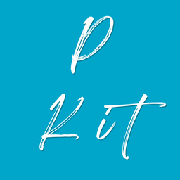

시작하려면 NovelAI API 키가 필요합니다.
NovelAI 웹사이트 → User Settings → Account → Get Persistent API Token 에서 발급합니다. 키는 이 기기에만 저장되고 다른 곳으로 전송되지 않습니다.
두 가지만 허용하면 준비가 끝납니다.
대량 생성은 몇 분씩 걸립니다. 화면을 꺼 두거나 다른 앱을 보고 있어도 끝나면 알려 드립니다.
생성한 그림을 폰의 문서/PeroPix 아래에 저장합니다. VPS·PC 로만 보낼 거면 건너뛰어도 됩니다.
끄면 기기에 쓰지 않습니다. 결과를 눌러 크게 본 뒤 마음에 드는 것만 저장하세요.
NovelAI 키는 이 기기에만 저장됩니다. APK 에는 들어 있지 않습니다.
키를 삭제하면 앱을 다시 켰을 때 첫 실행 화면이 나옵니다.
PC 나 VPS 에 receiver.py 를 띄워 두면 생성한 이미지를 그쪽으로 바로 보냅니다. 비밀번호는 만들 필요가 없습니다.
PC 나 VPS 에 receiver.py 를 띄워 두면 생성한 이미지를 그쪽으로 바로 보냅니다.
비밀번호는 만들 필요가 없습니다. python3 receiver.py --root ./images
만 하면 알아서 만들어 기억합니다.
터미널이 뭔지 몰라도 됩니다. 어디를 눌러야 하는지부터 짚어 드립니다.
VPS 나 PC 에 SSH 로 붙어서 아래 한 줄만 붙여넣으면 끝입니다. 파일을 올릴 필요도, 방화벽을 열 필요도, 계속 켜 둘 필요도 없습니다 (로그아웃해도 재부팅해도 알아서 돕니다).
끝나면 화면에 peropix://… 한 줄이 나옵니다.
그것을 아래 칸에 붙여넣으면 됩니다.
SSH 로 붙어서
cat > receiver.py 하고 붙여넣은 뒤 Ctrl+D 를 누르면 끝입니다.
이 앱에 든 것과 같은 버전입니다.
뽑은 그림들이 서로 얼마나 같은지 재 줍니다. 테스트에서는 그림체, 대량생성에서는 인물을 봅니다.
뽑은 그림들이 서로 얼마나 같은지 재 줍니다. 테스트 모드에서는 그림체가 고른 조합을, 대량생성에서는 인물이 튄 장을 짚어 줍니다.
수신함 폴더에 score.py 를 같이 두고
pip install torch transformers pillow 를 한 뒤
receiver.py 를 다시 켜면 됩니다.
GitHub 릴리스를 봅니다. 토큰은 필요 없습니다.
GitHub 릴리스를 봅니다. 토큰은 필요 없습니다.
순서대로 따라 하시면 됩니다. 프로그램을 따로 깔 것도, 파일을 올릴 것도 없습니다. 5분쯤 걸립니다.
서버 주소와 로그인 정보만 넣으면 앱이 직접 붙어서 설치까지 합니다. 터미널을 안 봐도 됩니다.
잘 안 되면 아래 방법으로 직접 하셔도 됩니다.
SSH 프로그램을 깔 필요 없습니다. 대부분의 VPS 업체는 홈페이지 안에서 바로 터미널을 열 수 있습니다.
복사한 뒤 터미널에 붙여넣고 Enter 를 누르세요. 1~2분쯤 글자가 주르륵 올라갑니다. 다 될 때까지 기다리시면 됩니다.
비밀번호를 묻거든 서버 로그인 비밀번호를 치세요. 칠 때 화면에 아무것도 안 보이는 게 정상입니다.
peropix:// 한 줄을 여기 붙여넣기
설치가 끝나면 터미널 맨 아래에
peropix://… 로 시작하는 줄이 나옵니다. 그것을 통째로 복사해 오세요.
이제 생성 화면 위쪽의 저장할 곳에서 이 수신함을 고르면 뽑은 그림이 그쪽으로 바로 갑니다.
이 방식은 암호화 없이 오갑니다. 집 안 PC 라면 그대로 쓰셔도 됩니다. 인터넷에 열린 VPS 라면 남이 주소와 비밀번호를 알아내면 들어올 수 있으니, 도메인이 있다면 Caddy 로 TLS 를 씌우거나 VPN(Tailscale) 안에서만 여는 것이 좋습니다.
NovelAI 키는 폰에만 있습니다. 서버로는 그림과 「무엇을 뽑을지」 만 올라갑니다.
#이름 을 한 줄에 홀로 쓰면 풀 정의, 프롬프트 안에 쓰면 그 풀에서 하나를 뽑습니다.
슬롯마다 따로 뽑습니다 한 번 돌릴 때도 장마다 다른 조합이 나옵니다.
{a|b} 와 ||a|b|| 도 씁니다.
Anlas 잔량은 홈 오른쪽 위에 뜹니다. 뽑기 전에 몇 장이 나오고 Anlas 가 얼마나 드는지 화면에 먼저 적어 줍니다.
1.2::artist:119:: 라고 쓰면 NAI 가 119를 새 가중치로 읽어
그림이 깨집니다. 앱이 알아서 피해 가니 신경 안 쓰셔도 됩니다.
같은 가중치인 다른 작가와 묶거나, 혼자면 괄호로 내보냅니다.테스트는 자기 프롬프트와 자기 이미지 설정을 따로 씁니다. 평소 슬롯·설정은 건드리지 않고, 다 뽑으면 그대로 돌아옵니다.
peropix://… 한 줄을 앱에 붙여넣으면 끝입니다.키는 언제나 폰에만 있습니다. 수신함으로 올라가는 것은 프롬프트와 설정뿐이고, NovelAI 를 부르는 것도 Anlas 를 쓰는 것도 폰입니다.
뽑은 그림들이 서로 얼마나 같은지 재 줍니다. 눈으로 스무 장을 훑어서는 두 장만 다른 것을 잘 못 잡아냅니다.
쓰려면 설정에서 일관성 검사 칸을 펴고 어디서 잴지 먼저 고릅니다. 수신함마다 맡길지 말지를 따로 켜고 끌 수도 있습니다.
score.py 를 receiver.py 옆에 두고
pip install torch transformers pillow 를 한 번 하면 됩니다.
score.py 는 설정 화면에서 바로 꺼낼 수 있습니다.장수가 적으면 판정을 그대로 믿지 마세요. 넉 장으로 "고르다" 가 나와도 우연일 수 있어서, 그럴 때는 "참고만 하세요" 라고 같이 적어 둡니다.
→1.10 이
실제로 나가는 값입니다.내이름/저장소이름 을 적고 저장하고 확인.폴더는 이렇게 만듭니다. 작품마다 하나씩, 그 안에 인물과 슬롯:
미아/ characters/미아.json ← 인물 (그 작품 안에서 공용) slots/일상.json ← 슬롯 묶음 = 작업 하나 slots/H.json 리사/ characters/리사.json slots/교복.json
슬롯 파일이 새로 생기거나 내용이 바뀌면 그것이 새 작업이 됩니다. 인물 파일을 고치는 건 작업이 되지 않습니다. 다음에 그 작품을 돌릴 때 최신 인물이 쓰입니다.
꺼 두면 목록만 받아 오고, 실행은 아래에서 눌러 정합니다. 켜 두면 물어보지 않고 Anlas 를 씁니다.
슬롯 파일, 미아/slots/일상.json
{
"name": "미아 · 일상",
"prefix": "1girl, silver hair, masterpiece",
"slots": [
{ "name": "1-1", "content": "smile, bedroom" },
{ "name": "1-2", "content": "angry, classroom" }
],
"options": { "count_per_slot": 1 }
}
인물 파일, 미아/characters/미아.json
{ "name": "미아", "content": "1girl, silver hair, blue eyes" }
저장 폴더는 작품 폴더 이름을 씁니다. 슬롯 파일에 folder 를
적으면 그것이 이깁니다. options 는 아는 값만 받습니다. 모델, 크기, steps, cfg,
샘플러·UC·퀄리티·네거티브·배수·한 명 모드·투명 배경·저장 형식·Variety+·시드.
수신함이 떠 있는 PC·VPS 에서:
python tools/job.py --url 192.168.0.5:8770 --token 토큰 \
push --file 작업.json
작업 JSON 은 PeroFix 가져오기와 같은 모양입니다 (prefix · slots · characters).
options 로 배수·투명 배경 같은 것도 함께 정할 수 있습니다.
아직 배경을 고르지 않았습니다.
꺼 두면 가로로만 움직이고 발은 바닥에 붙습니다.
미리보기는 Danbooru 의 실제 그림입니다. 어디까지 볼지 여기서 고르세요.
솔직히 말하면 짐작입니다. NAI 가 뭘 얼마나 배웠는지는 공개된 적이 없습니다. 다만 NAI 는 Danbooru 로 학습했으니 그림이 많은 작가일수록 많이 배웠다고 볼 수 있고, 실제로 그림이 적은 작가는 태그를 넣어도 잘 안 나옵니다. 그래서 이미지 수를 그대로 기준으로 쓰되, 몇 장이라서 이 등급인지 같이 적어 뒀습니다. 판단은 직접 하세요.
그림이 많아도 최근 것만 잔뜩이면 NAI 가 배운 뒤에 올라온 그림이라 안 먹힐 수 있습니다. 그래서 몇 년 이전 그림이 몇 %인지도 같이 보여 줍니다.
대량생성에서 저장해 둔 작가 태그 모음을 가져옵니다. 작가가 아닌 태그(퀄리티 등)는 알아서 빠집니다.
위에서 작가를 누르면 여기에 담깁니다.
작가 가중치를 어디까지 올리고 내릴 수 있는지 정합니다. 넓힐수록 차이가 커지지만, 1.5 를 넘으면 그 작가가 그림을 다 덮어버리고 0.5 아래면 넣으나 마나입니다.
다섯 명한테 전부 1.2 를 주면 프롬프트가 작가 쪽으로 쏠려서 구도, 표정, 옷 태그가 밀립니다. 켜 두면 한 명을 올릴 때 나머지가 조금씩 내려가니까, 가중치를 올려도 다른 게 망가지지 않습니다. 끄면 적은 값이 그대로 나갑니다.
가중치는 숫자::태그:: 모양으로 나갑니다. 1.0 인 작가는 그냥
이름만 씁니다. 어차피 같은 뜻인데 프롬프트만 지저분해지니까요.
그림이 많은 작가일수록 NAI 가 잘 알아봅니다. 최소 몇 장 이상으로 할지 정해 두면 그중에서 아무나 골라 보여 줍니다. 누를 때마다 다른 작가가 나옵니다.
서랍에 이미 있는 작가는 빼고 보여 줍니다. 담으면 장르도 같이 저장됩니다.
그림체를 비교하려면 작가 말고는 아무것도 달라지면 안 됩니다. 평소 쓰던 슬롯으로 돌리면 베이스, 네거티브, 캐릭터 프롬프트가 전부 같이 딸려 와서, 그림이 달라진 게 작가 때문인지 원래 프롬프트 때문인지 알 수가 없습니다. 그래서 여기서는 테스트용 프롬프트를 따로 씁니다. 평소 쓰던 건 건드리지 않고, 다 뽑고 나면 그대로 돌아옵니다.
여기서 정한 값은 테스트할 때만 쓰입니다. 대량생성 설정은 그대로 있습니다. 비워 두면 대량생성에서 쓰던 값을 씁니다.
저장 설정(형식·화질·생성 정보 지우기·자동 저장)과 인핸스 설정은 여기 없습니다. 그림이 달라지는 값이 아니라 뽑은 뒤를 다루는 값입니다. 배수도 없습니다. 테스트는 조합마다 한 장씩 뽑는 게 전제입니다.
고른 작가들에게 가중치를 아무렇게나 매긴 조합을 여러 개 만들어 한 번에 뽑습니다. 어떤 조합이 좋은지는 결국 눈으로 봐야 아니까, 슬라이더를 하나씩 옮기는 것보다 여러 개 뽑아서 고르는 게 빠릅니다.
켜 두면 가중치만 다르고 나머지는 똑같은 그림이 나옵니다. 끄면 가중치와 시드가 같이 바뀌어서, 뭐 때문에 달라졌는지 알 수 없게 됩니다.
마음에 드는 게 있으면 이걸로 를 누르세요. 딱 맞는 게 없으면 별점을 매기고 점수 반영해서 다시 뽑기. 높은 점수를 준 조합 쪽으로 가중치가 당겨집니다.
작가 태그를 잔뜩 넣고 뽑았는데 그림의 어떤 부분이 누구 때문인지 모를 때 씁니다. 20명을 한 명씩 빼 보면 20장이 들지만, 절반씩 빼면서 좁히면 5번이면 끝납니다.
한 번에 20명까지 고를 수 있습니다. 더 넣으면 찾는 횟수도 늘고, 무엇보다 한 그림에 작가가 스무 명 넘게 들어가면 그림체가 뭉개져서 뭐가 뭔지 구분이 안 됩니다.
뽑는 이미지 수가 두 배가 되는 대신, 한 명이 만든 게 아닌 경우를 잡아냅니다. 왼쪽을 빼도 남아 있고 오른쪽을 빼도 남아 있으면, 여러 명이 같이 만들어낸 겁니다.
범인을 찾았으니 이제 얼마나 세게 쓸지 정합니다. 한 명만 가중치를 바꿔가며 뽑으니까 이미지 수가 확 늘지 않습니다.
넣는 게 아니라 빼야 합니다. 절반만 넣고 뽑으면 그림이 통째로 달라져서 뭐 때문에 달라졌는지 알 수 없습니다. 전부 넣은 채로 절반만 빼야, 나머지 그림체는 그대로인 상태에서 그 부분만 사라졌는지 보입니다.
누구인지와 얼마나 세게를 같이 찾으면 안 됩니다. 켜고 끄는 것만 해도 20명이면 100만 가지가 넘는데, 여기에 가중치 5단계를 곱하면 손댈 수 없는 숫자가 됩니다. 그래서 범인은 가중치를 전부 1.0 으로 묶고 켜고 끄기만으로 찾고, 가중치는 범인을 찾은 다음에 그 한 명만 바꿔 봅니다. 다 합쳐서 10장쯤이면 끝납니다.
고른 그림체로 구도를 하나씩 뽑아 봅니다. 상반신에서 멀쩡하던 그림체가 전신이나 복잡한 배경에서 무너지는 일이 잦아서, 서랍에 넣기 전에 한 번 훑어보는 자리입니다. 시드는 고정해서 구도 말고는 달라지지 않게 합니다.
저장하면 대량생성의 저장된 작가태그 목록에 들어갑니다. 거기서 언제든 불러 쓸 수 있습니다.